命题逻辑
自然语言的例子
| 命题 (proposition) | 真假值 (bool) |
| 人是生物 | 真, true, 1 |
| 铁是生物 | 假, false, 0 |
数字电路表示 bool
| 电路值 | bool |
| 高电平 | 1 |
| 低电平 | 0 |
这里不处理数字电路的硬件实现. 我也不知道细节
logic-operator_(tag) logical and, or, not
and, 逻辑合取 (conjunction)or, 逻辑析取 (disjunction)not, 逻辑反取 (negation)自然语言的例子
| 命题 | 真假值 |
| 人是生物且 1 是自然数 | 1 |
| 人是生物且 1 = 2 | 0 |
形式语言
| 1 | 1 | 1 |
| 1 | 0 | 0 |
| 0 | 1 | 0 |
| 0 | 0 | 0 |
| 1 | 1 | 1 |
| 1 | 0 | 1 |
| 0 | 1 | 1 |
| 0 | 0 | 0 |
| 1 | 0 |
| 0 | 1 |
的数字电路和逻辑门 (gate) 的表示
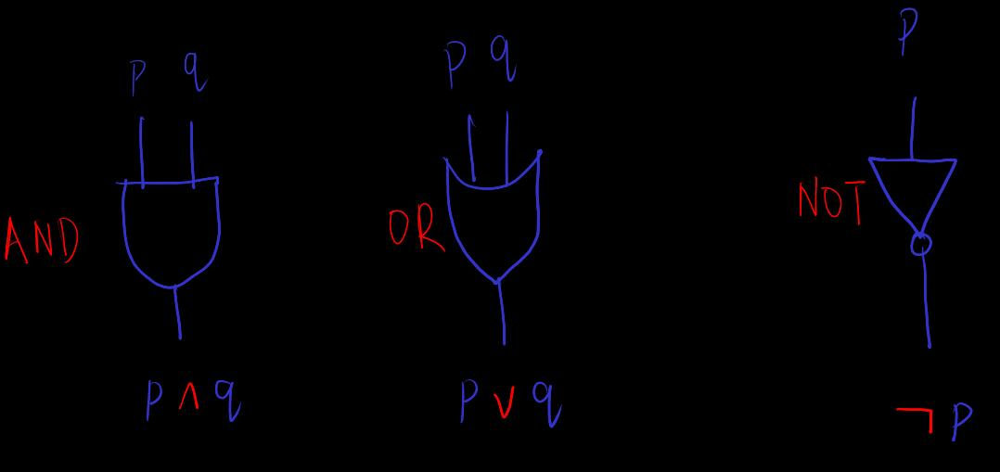
gate 设计为不允许反向电流?
not gate 将低电平转到高电平, 说明 gate 的硬件实现需要外部能量, 需要通电
"冗余性" e.g. 我们可以用 表示
电路 gate 实现是用 not,nand or 作为开始. 但我觉得保持 的对称性是有用的, 认知上或者 negetive dual 上
computability_(tag) 电路的可计算性
可用逻辑门制造任何 函数
(image from p.85 of ref-1)
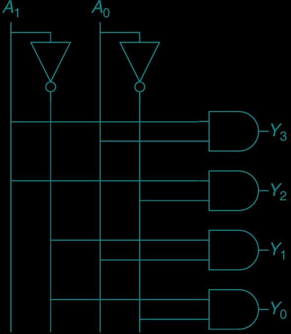
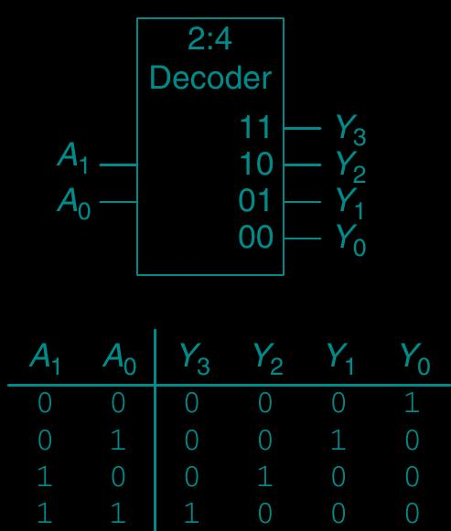
条电路 最多需要 个 and gate . 有些函数只需要 输入的一部分, 此时不接一些线
代表了 值并行电路的 "乘法" 性质
在输入中, 将想要输出到 1 的电线接到 or gate
Example not xor
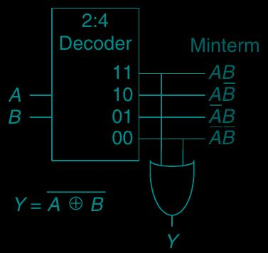
互斥或, ⊕, xor
| 1 | 1 | 0 |
| 1 | 0 | 1 |
| 0 | 1 | 1 |
| 0 | 0 | 0 |
如果函数不需要完整 , 电路计算元件不一定要按这种固定方式来构建. 可以根据情况, 进一步简化, 减少 gate 数量的使用. 但这里不进入细节
计算单元中多条输入线或输出线的一种符号表示
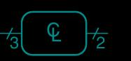
control-circuit_(tag) 控制电路, 选择器 or 复用器 (multiplexer)
将 输出到 , 将 输出到
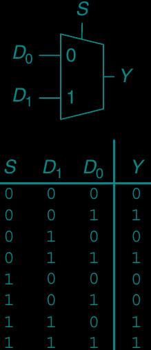
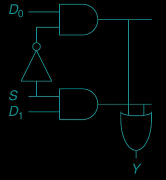
个输入 需要 条控制电路
De-Morgan-law_(tag) negative dual 律 or De Morgan 律
用穷举证明, 就像人类数数其实也是穷举. 下同
boolean-algebra_(tag)
bool 代数记为 或者
bool-distributive-law_(tag) 分配律
其 negative dual
归纳地
以及 e.g.
bool-commutative-law_(tag) 交换律 . same for
bool-associative-law_(tag) 结合律 . same for
periodic-circuit_(tag) 周期电路

由晶体振荡器实现
memory-circuit_(tag) 电路记忆
黑箱模型
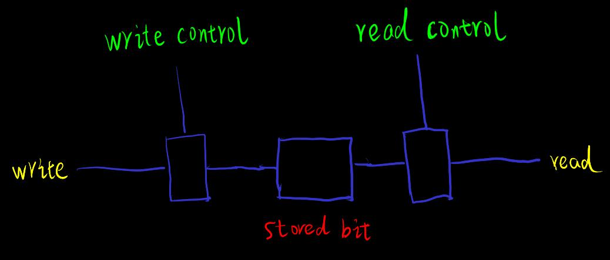
可能的实现
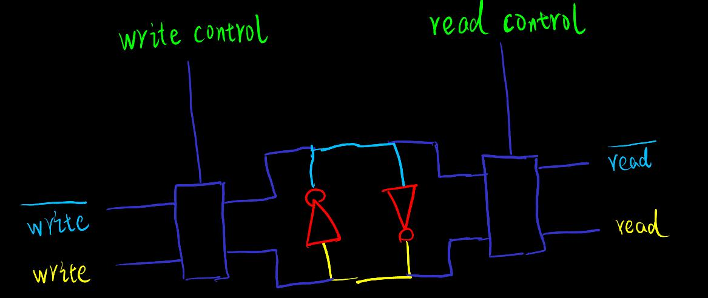
not gate) 确保电流方向并防止 1 衰减 (通过外部能量) finite-machine_(tag) 有限状态机
i/o_(tag) 电路的输入可能来自外界 (e.g. 传感器, 键盘), 电路的输出也可能到达外界 (e.g. 信号灯, 屏幕)
外界输入的节奏通常不一致于计算机内部周期电路的节奏, 因此需要让外界输入先经过同步元件
memory-array_(tag) 内存阵列
二进制, 序, 自然数. Example 就是从 000, 001, 010 数到 111 时经过的步数, 虽然这假设了我们能识别三位 bit. ,
用多位 bit 包含的自然数范围, 例如 3 bit 的 作为参数, 去对应到真实世界的内容. Example 计算机的字符的表示方式 e.g. ASCII, Unicode, 屏幕的发光点位置和颜色
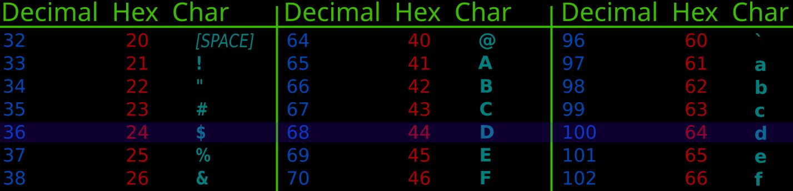
(image modified from wiki media about ASCII)
在实际应用中, 每个地址多个 bit 好于每个地址 1 bit, or 二维内存阵列比一维高效
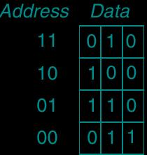
instruction_(tag) 指令
通常由内存里一个地址中写着的多位 bit 数据来表示某些电路任务
一些常用电路任务
假设一个指令在一个电路周期内完成 (单周期计算机)
Example add 指令. add x_1 x_2. 指令的 bit 数据位分为三个区域, 表示不同类型的信息
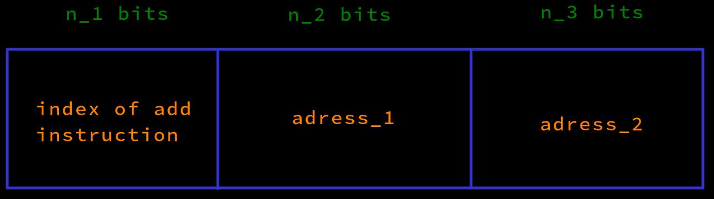
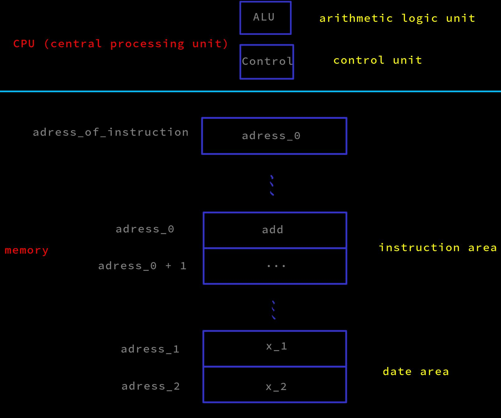
读取 add 指令
add 指令在 adress_0 (add x_1 x_2 以及 adress_1, adress 2 来自源代码和编译器的生成)adress_of_instruction 存储的值 adress_0 被读出, add 指令的 index 区的数据被送到控制信号元件 (control unit), 然后计算出控制信号并输出 (细节太多, 见 ref-1)执行 add 指令
x_1 in adress_1 和 x_2 in adress_2, 将它们输入到算术元件 (ALU)x_1 + x_2 被写到 adress_1进入和读取下一个周期的指令
adress_of_instruction 存储的值 adress_0 被已经设计好的电路送到算术元件, 计算出 adress_0 + 1 i.e. 下一个指令地址, 被写到 adress_of_instruction 里面的数据. adress_0 + 1 将在下一个电路周期被执行其它指令可能有多于两个的数据区 (非指令 index 区)
指令流
Example loop_(tag) 循环
周期电路的速度远远高过人类速度 (1 GHz = 每秒 10^9 次周期)
高级编程语言的循环
i : int = 0;
while (i < 10) {
i = i + 1;
} // result = 10
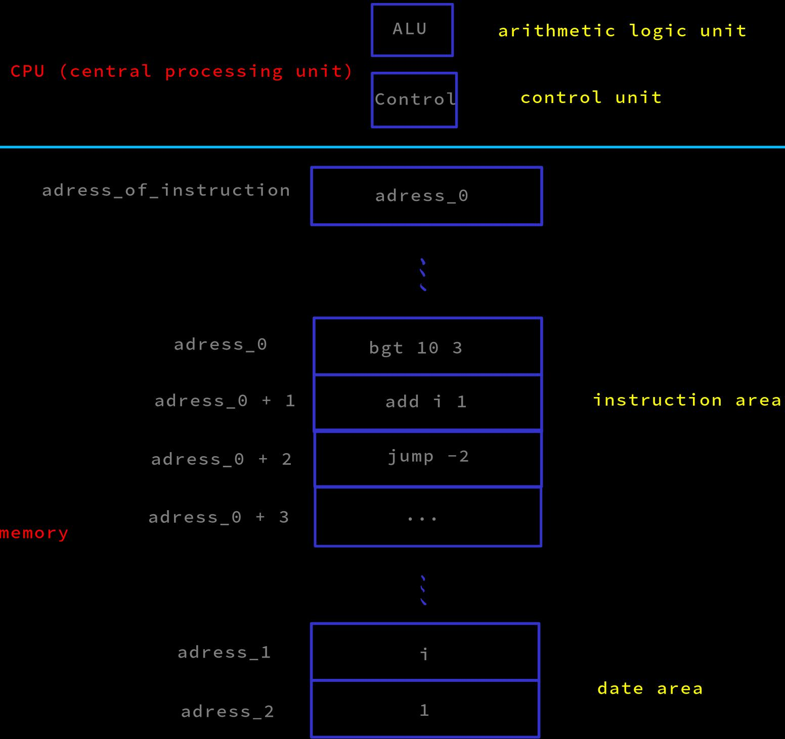
读取指令
bgt (branch_grater_than) 指令存储在 adress_0. (指令从源代码和编译器生成.) 10 在 bgt 的一个数据区, while loop 需要的指令流数量 3 在 bgt 的另一个数据区
执行指令
执行条件判断
读出 i 和 10, 在算术元件中比较大小, 根据结果给出控制信号, 结合指令 bgt index 区给出的控制信号
根据条件判断的结果, 执行不同的任务
算术元件根据此判断输出控制信号, 将 adress_of_instruction 存储的值改变为下一条指令的地址 adress_0 + 1
adress_0 + 1 的指令要执行任务
用 add 指令计算 i + 1, 写回 adress_1
执行完 add 后, 要回到下一次循环的判断
add 指令的下一条指令是 jump 指令, 执行结果是, 修改 adress_of_instruction 的值为 adress_0, 实现指令的跳转, 进行下一次循环的判断
adress_of_instruction 存储的值改变为 adress_0 + 3, 跳出 while 循环, 执行后面的指令 compile_(tag) parse_(tag)
用 parser or compiler (编译器) 验证 token 流语言正确性, 本质上是遍历所有语言规则, 或使用生成的有限状态机
parser 的运行需要生成内存中大型复杂的数据结构 (一些形象的描述: 表格, 结点, 树)
如果数据流是高级编程语言源代码, 还可以根据这个数据结构生成指令流. 此时称为 compile (编译), 但 parse 和 compile 经常混用
如果语言规则很复杂, 可以对语言规则进行 (多次) 分类和分解, 先遍历分类, 再遍历分类里面的规则. Example 分开为 "syntax 检查" 和 "semantics 检查"
抽象和 API 的概念的启发性例子: 你周围的物品, 不知道制作原理也能方便地使用, 因为它们是被这样设计的
计算机, 除了周期电路高速的优势, 其它优势有, 内存记忆的容量 (1 GB = 2^(30+3) bit = 8589934592 bit) 和持续性 (通电时间)
它们是证明辅助对人类有用的原因的一部分
内存里可以构造复杂的数据结构和计算函数. 对很多其它领域也可能有用
变量 or 变量名的动机是人类无法记忆那么多地址, 变量名是为了用语义协助人类, 并让计算机将变量名转化为地址, 根据变量在整个程序逻辑的位置
变量 or 变量名使得可以通过地址对内存里面所存储的值进行复用, 而不是一次型